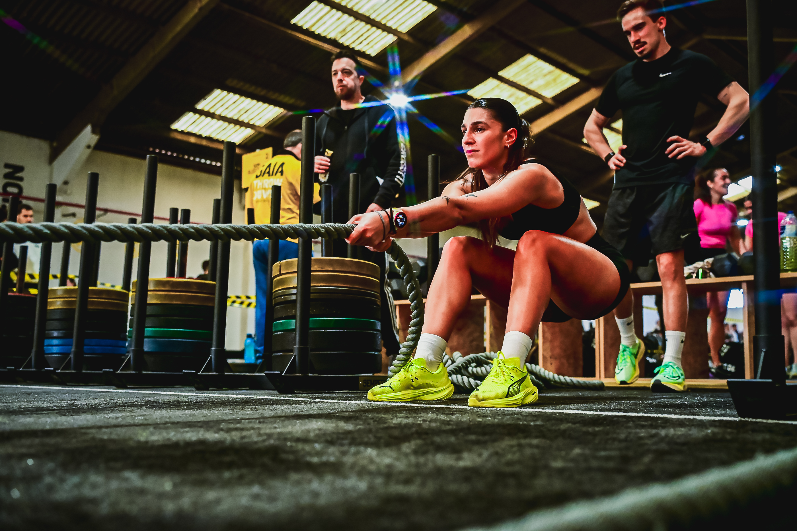
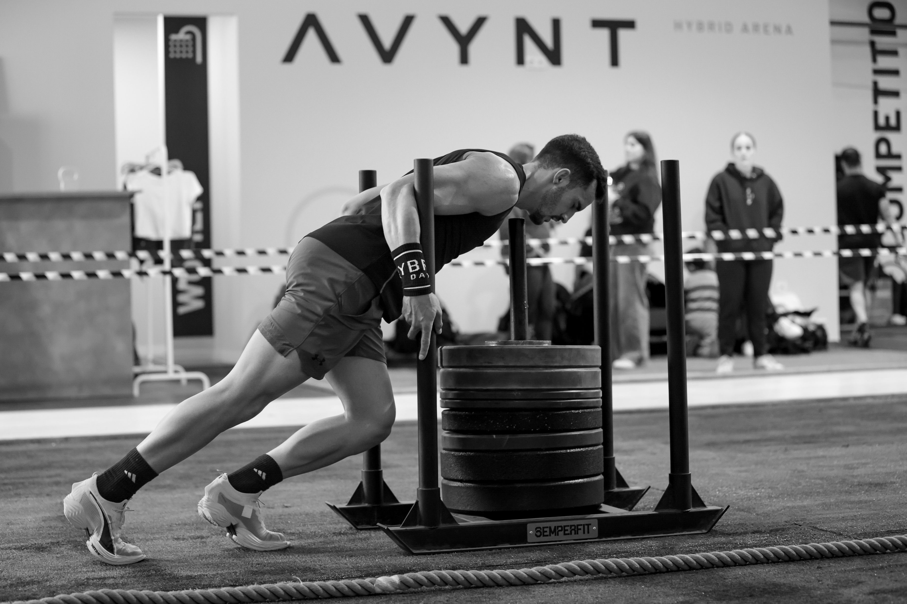

AVYNT Hybrid Arena, a hybrid-training gym in Vila Nova de Gaia, opened its new AVYNT League on February 21 with a Hyrox-style stage one, splitting competitors across ten divisions — Masculino, Feminino and Mixed, in both singles and doubles formats — plus a closing teams relay.
Competitors worked through a course pairing hybrid-endurance running with strength stations, including sandbag carries, rope pulls and sled pushes, in a Hyrox-inspired simulation format built by the venue. AVYNT confirmed the league will continue with a second stage on May 30, with registration opening through the link in its Instagram bio.
In the men's categories, MJ Ketlebells won Doubles Masculino Open in 00:56:15 across a 21-team field, while Timon e Pumba topped the 8-team Doubles Masculino Pro division in 00:52:49, the quickest time recorded across the entire event. Pedro Palma won Single Masculino Open (00:59:31, 15 competitors) and Rafael Cabeleira took Single Masculino Pro (01:07:52, 6 competitors).

The women's divisions were led by Maria Cerqueira in Single Feminino Open (01:17:45, ahead of Ana Pereira, Filipa Pinto and Vera Silva) and Marta Castro in Single Feminino Pro (1:21:00, ahead of Vera Cristina and Sónia Oliveira). In doubles, Paguei Para Isto won Feminino Open in 01:10:36 over a field of nine teams, and Bodydestroiprimos topped Feminino Pro in 1:07:30 against Hive.

Beat Academy Mix won the roughly 30-team Doubles Mixed division in 00:57:49, and Que 4! closed the day by winning the Teams Relay in 1:09:12. Image Media provided the event's photo coverage throughout the day, with a three-photographer team — Nemi, Paulo Nomade and Luan Rodrigo — working from inside the arena.